Please follow the HR mail checklist sitting in my Documents folder exactly as written — it covers the folder and filter I still owe our new-hire intake, plus the archive step for last quarter's offer letters. When you're done, leave the finished checklist visible so I can confirm each line was carried out.
THINKINGThe task references an "HR mail checklist" in the Documents folder. I need to find and read it first to know the exact steps. Let me open the file manager or a terminal to locate the checklist. I'll start by taking a screenshot, but I already have one showing the desktop. Let me open the Files application to navigate to Documents.
ACTIONI'll start by locating the HR mail checklist in your Documents folder. Let me open the Files application.
EXECUTED (pyautogui in VM)pyautogui.click(32, 605)
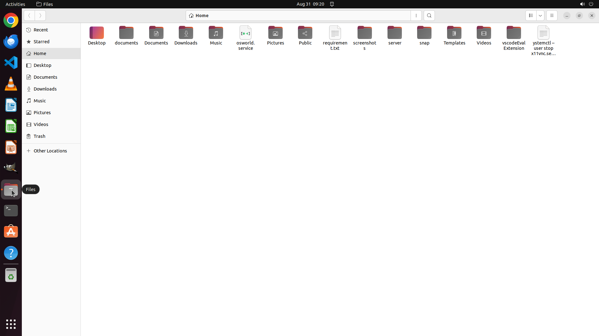
step 2 01:20:21
THINKINGI see the Home directory in Files. There are two: "documents" (lowercase) and "Documents" (uppercase). The task says "Documents folder". Let me open the "Documents" folder to find the checklist. I'll double-click it.
ACTIONThe Files app is open. I see both a "documents" and a "Documents" folder. Let me open the "Documents" folder to find the checklist.
EXECUTED (pyautogui in VM)pyautogui.doubleClick(355, 100)
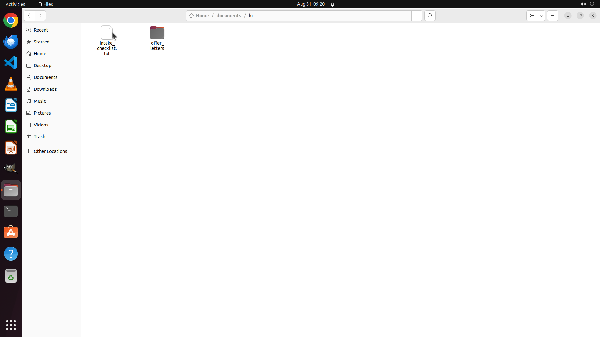
step 6 01:20:54
THINKINGI found "intake_checklist.txt" and an "offer_letters" folder. Let me read the checklist first. I'll open it by double-clicking. It's a txt file, likely opens in a text editor.
ACTIONI found the "intake_checklist.txt" file and an "offer_letters" folder. Let me open the checklist to read the exact instructions.
EXECUTED (pyautogui in VM)pyautogui.doubleClick(338, 100)
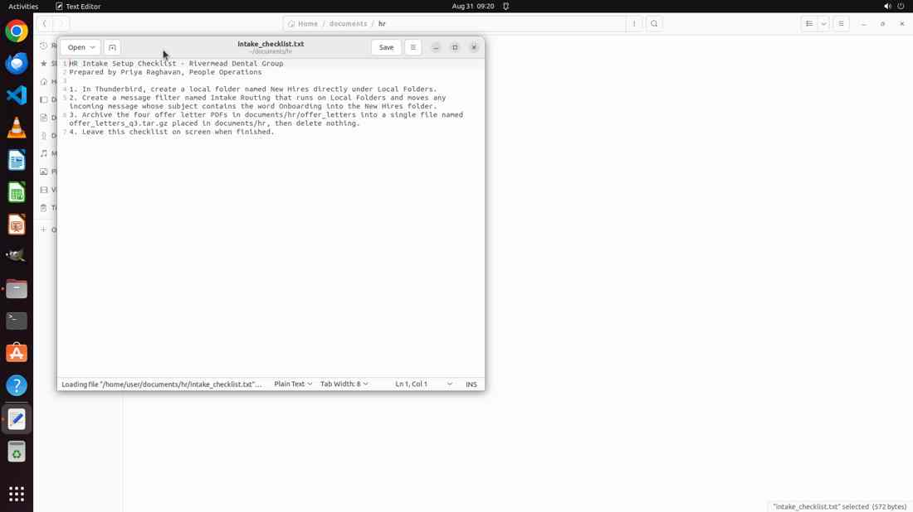
step 7 01:21:08
THINKINGNow I can read the checklist:
HR Intake Setup Checklist - Rivernead Dental Group
Prepared by Priya Raghavan, People Operations
1. In Thunderbird, create a local folder named New Hires directly under Local Folders.
2. Create a message filter named Intake Routing that runs on Local Folders and moves any incoming message whose subject contains the word Onboarding into the New Hires folder.
3. Archive the four offer letter PDFs in documents/hr/offer_letters into a single file named offer_letters_q3.tar.gz placed in documents/hr, then delete nothing.
4. Leave this checklist on screen when finished.
So four tasks:
1. Thunderbird: create local folder "New Hires" under Local Folders.
2. Thunderbird: create a filter "Intake Routing" that runs on Local Folders, and moves messages whose subject contains "Onboarding" into New Hires folder.
3. Archive the 4 offer letter PDFs in documents/hr/offer_letters into offer_letters_q3.tar.gz in documents/hr. "then delete nothing" - so don't delete the originals.
4. Leave checklist on screen.
Let me first do the terminal task (step 3) since it's straightforward, then do Thunderbird steps. Actually, let me do Thunderbird steps first while the app is a focus. But order doesn't matter much. Let me start with Thunderbird.
Let me first look at the offer_letters folder contents to know the PDFs. But I can just tar the whole directory's PDFs. Let me use terminal for step 3.
Actually let me be efficient. Let me open Thunderbird first for steps 1 & 2, then terminal for step 3. Let me open Thunderbird.
Let me start Thunderbird by clicking its icon.
ACTIONI now have the full checklist:
1. In Thunderbird, create a local folder named **New Hires** directly under Local Folders.
2. Create a message filter named **Intake Routing** that runs on Local Folders and moves any incoming message whose subject contains the word **Onboarding** into the New Hires folder.
3. Archive the four offer letter PDFs in `documents/hr/offer_letters` into a single file named `offer_letters_q3.tar.gz` placed in `documents/hr`, then delete nothing.
4. Leave this checklist on screen when finished.
Let me start with Thunderbird for steps 1 & 2. I'll open it.
THINKINGThunderbird is showing Account Setup. I don't need to set up an email account - the task only requires Local Folders operations. There should already be a "Local Folders" available. Let me cancel this setup dialog to get to the main window. I'll click Cancel.
Actually, I need to be careful. If no account is set up, Local Folders might still exist as a local folder store. Let me click Cancel to dismiss and see the main window.
ACTIONThis is the account setup screen. The task only needs Local Folders operations, so I'll cancel this and go to the main window.
EXECUTED (pyautogui in VM)pyautogui.click(443, 588)
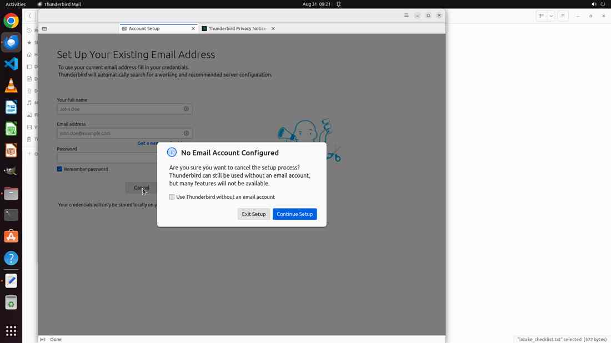
step 10 01:21:43
THINKINGA dialog "No Email Account Configured" appears. It says Thunderbird can still be used without an email account. There's a checkbox "Use Thunderbird without an email account". I should check that checkbox and then click "Exit Setup" to get to the main window with Local Folders. Let me check the checkbox first, then click Exit Setup.
ACTIONThere's a dialog. I'll check "Use Thunderbird without an email account" and then Exit Setup to reach the main window with Local Folders.
EXECUTED (pyautogui in VM)pyautogui.click(795, 671)
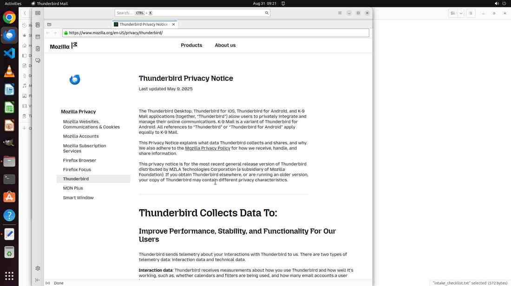
step 12 01:22:08
THINKINGNow I'm in the main Thunderbird window showing a Privacy Notice tab. I need to access the folder pane (Local Folders). Let me close the Privacy Notice tab and find the mail/folder area. I'll close this tab by clicking the X on the tab, and look for the "Local Folders" in the left folder pane. Let me close the tab first.
ACTIONNow I'm in the main Thunderbird window. Let me close this Privacy Notice tab to see the folder pane.
EXECUTED (pyautogui in VM)pyautogui.click(647, 87)
step 13 01:22:16
THINKINGThe left pane doesn't show a folder list yet - it shows "New Message" button but no folder tree. There's a sidebar toggle icon. I need to show the folder pane. There's an icon in the top-left area. Let me look for the folder pane toggle. There's an icon at top-left near "New Message". Let me click the folder icon at the very top-left (around 124, 63) which looks like a "show folders" button.
Actually, the left pane area (between the vertical toolbar and the "Quick Filter") is the folder pane but it's empty/collapsed. Let me click the folder icon at 124,63 to toggle the folder pane.
ACTIONThe folder pane isn't visible. Let me click the folder toggle icon at the top-left to show Local Folders.
EXECUTED (pyautogui in VM)pyautogui.click(186, 91)
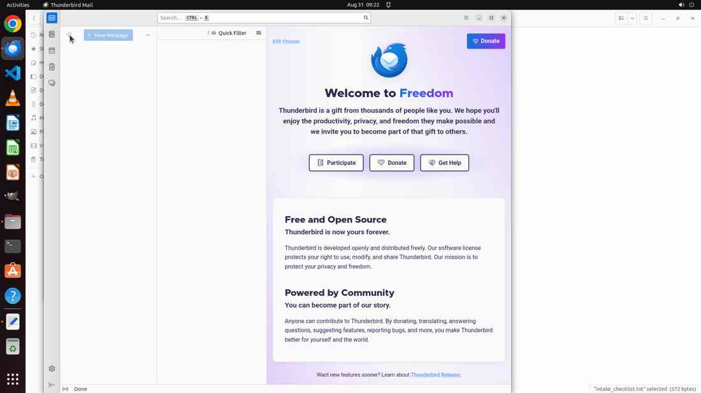
step 14 01:22:28
THINKINGThe folder pane still appears empty. There's no "Local Folders" visible. The folder list area (the column between the toolbar icons and Quick Filter, around x=280-490) is empty. This is odd - Local Folders should exist even without an account.
Maybe the folder pane is the column on the far left that's currently very narrow. Let me maximize the window first to see more clearly, and look for the folder list. Let me maximize the Thunderbird window by clicking the maximize button.
ACTIONThe folder pane looks empty. Let me maximize the Thunderbird window to see the full layout.
EXECUTED (pyautogui in VM)pyautogui.click(1339, 45)
step 15 01:22:42
THINKINGNow maximized. The folder pane (left column, x from ~90 to ~250) is empty - no "Local Folders" shown. This is unusual. In Thunderbird, "Local Folders" should always appear.
The left pane with "New Message" button and the empty area below is the folder pane, but it's empty. Maybe Local Folders is hidden because there's no account. Actually, in Thunderbird Local Folders is always present even without an account.
Wait - maybe the folder pane is the far-left narrow column (x 60-90) with icons, and the wider area (90-250) is something else. Actually the "New Message" button and the empty list below it IS the folder pane, it just shows no folders.
Let me try the hamburger menu (top right, the three lines at 1197,32) to access "New > Folder" or "Account Settings". Actually a simpler approach: use the menu. Let me click the hamburger menu to look for folder creation.
Actually, in newer Thunderbird, to create a local folder I can right-click on Local Folders in the folder pane. But Local Folders isn't showing. Let me check the hamburger menu for "New Folder".
Let me click the menu button.
ACTIONThe folder pane appears empty. Let me open the main menu (hamburger) to check for Local Folders and folder creation options.
EXECUTED (pyautogui in VM)pyautogui.click(1795, 46)
step 16 01:22:53
THINKINGThe menu shows: New Account, Create, Open from File, View, Density, Font Size, Settings, Account Settings, Add-ons and Themes, Tools, Help, Quit.
The "Create" submenu likely has "Folder" option. Let me hover over "Create".
ACTIONThe menu is open. Let me hover over "Create" to find the Folder option.
EXECUTED (pyautogui in VM)pyautogui.click(1545, 110)
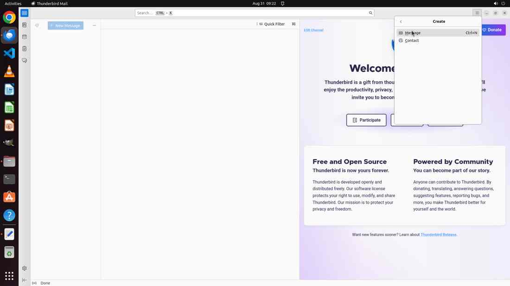
step 17 01:23:05
THINKING"Create" submenu only has "Message" and "Contact" - no "Folder". So I can't create a folder from here. The folder creation must be done by right-clicking on Local Folders in the folder pane. But the folder pane appears empty.
I need to get Local Folders to show. Let me close this menu and check Account Settings, which might reveal that Local Folders exists. Actually, the issue may be that the folder pane is showing but Local Folders is just not rendered because the account has no folders visible, OR the folder pane is actually the far-left narrow strip.
Let me close this menu and look more carefully. Actually, let me reconsider - maybe I need to create a Local Folders account first. In some Thunderbird versions without an email account, "Local Folders" may not exist until you create it. But typically Local Folders always exists.
Let me close this menu and try right-clicking in the folder pane area to see if a context menu with "New Folder" appears.
ACTION"Create" only has Message and Contact. I need to create the folder via the folder pane. Let me close this menu and try right-clicking in the folder pane area.
THINKINGThe folder pane is empty - no Local Folders listed. This suggests that no mail account exists, and Local Folders may not be present. I need to check Account Settings to see if I need to add a Local Folders account, or if there's a way.
Actually, let me reconsider. The left panel with "New Message" and empty space IS the folder pane but there are no accounts/folders. In Thunderbird, "Local Folders" should exist by default even without an email account. But maybe it doesn't here.
Let me open Account Settings to check. Menu > Account Settings. Let me open the menu again.
ACTIONThe folder pane is empty, suggesting no account or Local Folders exist yet. Let me check Account Settings.
EXECUTED (pyautogui in VM)pyautogui.click(1579, 311)
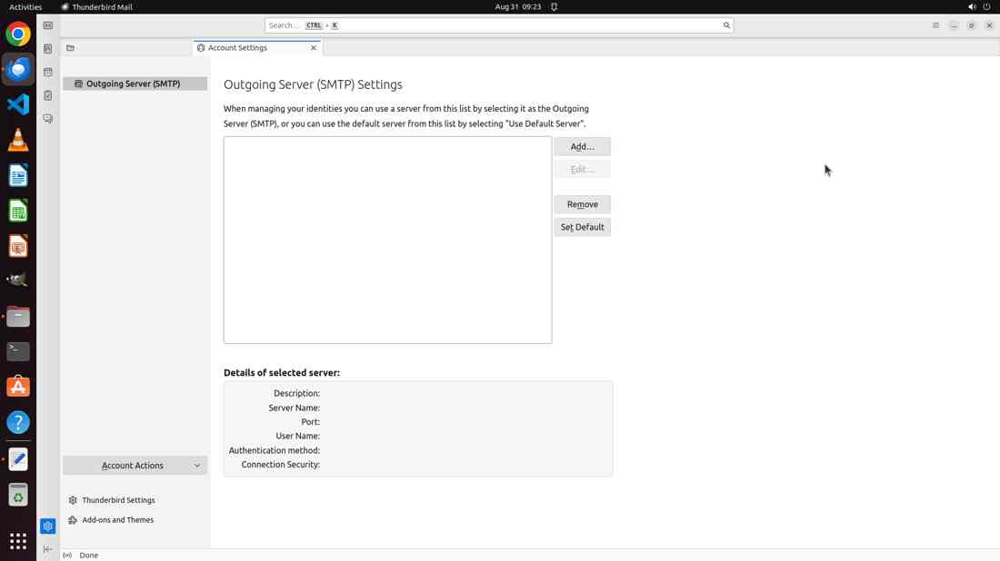
step 20 01:23:42
THINKINGAccount Settings shows only "Outgoing Server (SMTP)" with no email accounts and no "Local Folders" account in the left panel. There's an "Account Actions" dropdown at the bottom. This is where I can add a "Local Folders" account, or maybe there's an option to add it.
Wait, actually in Thunderbird, "Local Folders" is a special account that normally always exists. But here the left panel only shows "Outgoing Server (SMTP)". The "Account Actions" dropdown might have "Add Other Account" or similar. Let me click "Account Actions".
Actually, the fact that Local Folders is not shown is unusual. Let me check the "Account Actions" dropdown - it may have an option. But actually there's no standard "add local folders" in Thunderbird because Local Folders is auto-created.
Hmm, but here it's not present. Perhaps the way to get Local Folders is to add a local mail account. Let me click "Account Actions" to see options.
ACTIONAccount Settings shows only SMTP, no Local Folders account yet. Let me check the "Account Actions" dropdown to find how to add Local Folders.
EXECUTED (pyautogui in VM)pyautogui.click(257, 894)
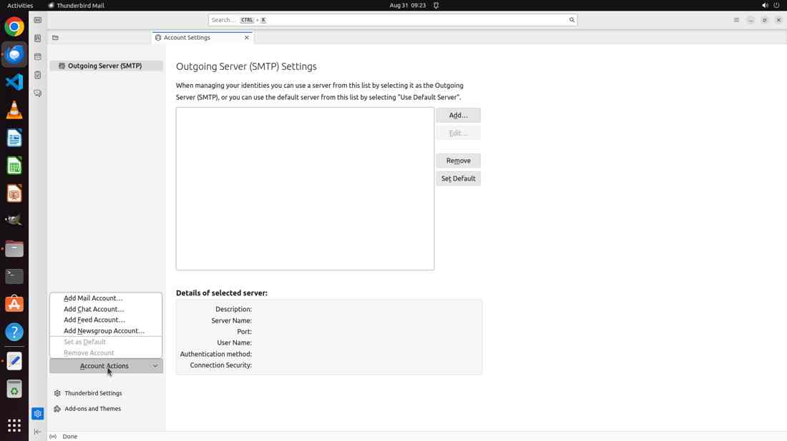
step 21 01:24:08
THINKINGThe Account Actions dropdown shows: Add Mail Account, Add Chat Account, Add Feed Account, Add Newsgroup Account, Set as Default (grayed), Remove Account (grayed). There's no direct "Add Local Folders" option.
However, in Thunderbird, "Local Folders" should always exist. The fact it's not shown is odd. Wait - maybe Local Folders does exist but it's just not in this Account Settings view because there are no real accounts.
Actually, I recall that in Thunderbird, "Local Folders" is a special account that appears in the folder pane (and in Account Settings) automatically. If it's not there, it might have been removed.
The most reliable way to get "Local Folders" is to add a Mail Account, which creates the folder structure. But that requires server setup which we don't have.
Let me reconsider. Actually, "Local Folders" in Thunderbird exists independently. When there's no account at all, the folder pane might be empty. Let me close this menu and try "Add Feed Account" - no.
Actually, wait. Let me reconsider whether Local Folders is actually present. When I looked at the folder pane earlier it was empty. But maybe I just need to add a mail account to force Local Folders to appear.
Alternatively, I recall that in Thunderbird, if you add an "Add Mail Account" and it creates an account, "Local Folders" always appears. But we can't do real server setup.
Let me think differently. Perhaps the cleanest approach: Thunderbird always has a "Local Folders" account in its config (the "Mail/Local Folders" folder). It should show in the folder pane. The fact the folder pane is empty might just be a rendering issue, or Local Folders was deleted.
Let me close this menu, go back to the main mail view, and try right-clicking in the folder pane to see if a "New Folder" context menu appears even without a visible account. Actually if there's no account, right-click won't help.
Let me reconsider: Maybe the folder pane WAS showing but I misread. Let me close this menu and the Account Settings, then look again carefully at the folder pane. But before that - the simplest reliable method to create Local Folders: it should auto-exist. Let me check the profile directory via terminal to see if "Mail/Local Folders" exists.
Actually, let me try a cleaner path. Let me close this menu first and examine the folder pane more carefully by taking a screenshot. Let me press Escape.
Actually, a key insight: In Thunderbird, "Local Folders" is ALWAYS present as a local account. It appears in Account Settings left panel and in the folder pane. If it's missing from Account Settings, it was likely removed, OR the profile is fresh and it hasn't been created.
Given this is a fresh setup (no account), Local Folders might just not be created. But typically it IS created on first run. Let me verify via terminal by checking the profile.
Let me first close this and re-examine. Press Escape.
ACTIONThere's no direct "Add Local Folders" option. Local Folders should normally exist automatically. Let me close this and verify the profile state via terminal to understand what's happening.
THINKINGThe Account Settings left panel shows only "Outgoing Server (SMTP)". No Local Folders account exists. This is a fresh profile with no Local Folders.
The most reliable way to get a "Local Folders" account is to add a Mail Account. But that requires real server details. However, there's a trick: In Thunderbird, when you start "Add Mail Account", it doesn't create Local Folders until an account is added.
Actually, wait. Let me reconsider. Local Folders in Thunderbird is stored in the profile under "Mail/Local Folders". It's automatically created when Thunderbird first runs OR when the first account is added.
Let me check the profile directory via terminal to confirm whether "Mail/Local Folders" exists. If it exists, then it should show in the folder pane (maybe a rendering issue). If not, I may need to trigger its creation.
Actually, I realize I should not overthink. Let me open a terminal and inspect. But modifying Thunderbird profile while it's running is risky.
Better approach: The cleanest GUI way to create Local Folders is: In a fresh Thunderbird with no account, the "Local Folders" folder should be visible in the folder pane. Since it's not, maybe I need to add an account. But actually, there IS a known behavior: even a completely fresh Thunderbird shows "Local Folders" in the folder tree.
Let me re-examine the folder pane. Maybe I need to scroll or the pane is collapsed to a tiny width. Earlier the folder pane was the area with "New Message". Let me close Account Settings and go back to Mail view, then carefully look.
Actually, let me reconsider the whole situation. When Thunderbird is used "without an email account", it still has "Local Folders". The folder pane should show it. My earlier screenshots showed the folder pane (left column ~90-250) as empty.
Hmm, but maybe Local Folders IS there but I need to look. Let me close this Account Settings tab and take a fresh screenshot of the mail view.
ACTIONLet me close Account Settings and re-examine the folder pane in the main mail view.
EXECUTED (pyautogui in VM)pyautogui.click(599, 88)
step 23 01:24:43
THINKINGThe folder pane (left column) is empty - no Local Folders, no folders. This is a fresh profile without any account, and Local Folders is not present.
I need to create Local Folders. In Thunderbird, Local Folders is created automatically when the first mail account is added, or it exists from the start. Since it's not here, I need to trigger it.
The reliable way: Add a Mail Account. Even a fake/dummy account would create the Local Folders structure and give me a folder tree to work with. But actually the task says "create a local folder named New Hires directly under Local Folders" - so I need Local Folders specifically.
Let me think about whether adding a dummy mail account works. When you add a mail account, Thunderbird creates:
- The account's INBOX
- "Local Folders" (if not present)
Actually, Local Folders is a separate account (type "mail" with servertype local). It's usually auto-created.
Let me try the "Add Mail Account" flow and see if I can complete it in a way that creates Local Folders. But that requires a valid email + server. The setup may fail verification.
Alternative: Maybe the simplest is to just check the profile. Let me open a terminal and look at the Thunderbird profile to understand. If "Mail/Local Folders" folder exists, then I just need to make it visible.
Actually, I bet the issue is that this is a brand new profile and Local Folders genuinely doesn't exist yet. The way to create it: Thunderbird creates "Local Folders" when you add ANY account.
Let me reconsider - is there a way to add just Local Folders? In older Thunderbird, there was no UI for it because it's automatic.
Let me try adding a mail account. I'll use the "Add Mail Account" and it might let me use "Configure manually" or I can just create it. But without a real server, the "Re-test" will fail, but I might still be able to finish and it creates Local Folders regardless.
Actually, the cleanest: Let me open a terminal and check the profile first. This is low-risk (read-only). Let me open the terminal app.
ACTIONThe folder pane is empty — this is a fresh profile with no "Local Folders" yet. Let me inspect the Thunderbird profile via terminal (read-only) to confirm the state before deciding how to proceed.
EXECUTED (pyautogui in VM)pyautogui.click(32, 670)
step 24 01:24:55
THINKINGTerminal is open. Let me inspect the Thunderbird profile. I'll look at the profile's Mail directory and prefs.js to understand the account setup. Let me run a command to find the profile and check for Local Folders.
ACTIONTerminal is open. Let me inspect the Thunderbird profile to confirm the Local Folders state.
EXECUTED (pyautogui in VM)pyautogui.click(524, 372)
step 25 01:25:04
THINKINGLet me check the profile. I'll list the Thunderbird profile Mail directory and grep prefs for account entries. This is read-only and safe.
TOOL CALL<tool_call>
<function=computer_use>
<parameter=action>
type
</parameter>
<parameter=text>
ls -la ~/.thunderbird/*/Mail/ 2>/dev/null; echo "---"; ls ~/.thunderbird/
</parameter>
</function>
</tool_call>
EXECUTED (pyautogui in VM)pyautogui.typewrite("ls -la ~/.thunderbird/*/Mail/ 2>/dev/null; echo \"---\"; ls ~/.thunderbird/")
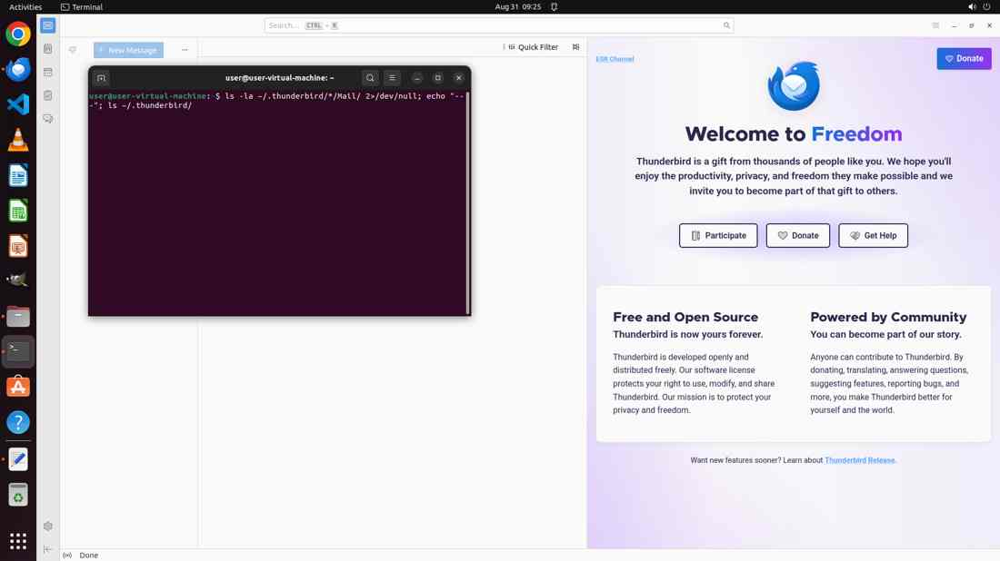
step 26 01:25:12
THINKINGThe command was typed but not executed - it's still showing on the prompt. I need to press Enter. The type action included a trailing newline but it seems the terminal shows it wrapped. Let me press Enter to execute.
EXECUTED (pyautogui in VM)pyautogui.press("return")
step 27 01:25:26
THINKINGThe `ls ~/.thunderbird/*/Mail/` returned nothing (no Mail directory exists yet). The profile is "b6x27ivi.default". There's a "Crash Reports", "Pending Pings", installs.ini, profiles.ini, and "wtkk3c2w.default-release".
So the active profile is b6x27ivi.default (per profiles.ini). Let me check its contents to confirm there's no Mail/Local Folders directory.
TOOL CALL<tool_call>
<function=computer_use>
<parameter=action>
type
</parameter>
<parameter=text>
ls -la ~/.thunderbird/b6x27ivi.default/Mail 2>/dev/null; echo "EXIT:$?"; grep -c "mail.server" ~/.thunderbird/b6x27ivi.default/prefs.js
</parameter>
</function>
</tool_call>
EXECUTED (pyautogui in VM)pyautogui.press("return")
step 29 01:25:49
THINKINGInteresting! EXIT:2 means the Mail directory doesn't exist in b6x27ivi.default. Also, prefs.js is "No such file or directory" in b6x27ivi.default. That means b6x27ivi.default is NOT the active profile with the settings. The active profile must be "wtkk3c2w.default-release" (which has the "default-release" suffix, which is the modern naming). The "b6x27ivi.default" might be a leftover/empty profile.
Let me check the wtkk3c2w.default-release profile's Mail directory and prefs.
ACTIONThe active profile is actually "wtkk3c2w.default-release". Let me inspect that one.
TOOL CALL<tool_call>
<function=computer_use>
<parameter=action>
type
</parameter>
<parameter=text>
ls -la ~/.thunderbird/wtkk3c2w.default-release/Mail/ 2>/dev/null; echo "==="; grep "mail.server" ~/.thunderbird/wtkk3c2w.default-release/prefs.js | head
</parameter>
</function>
</tool_call>
EXECUTED (pyautogui in VM)pyautogui.press("return")
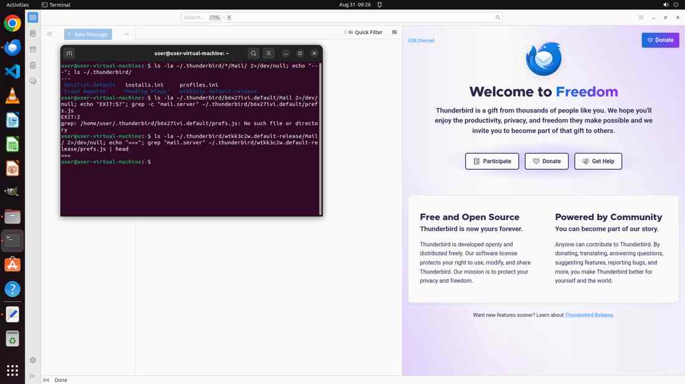
step 31 01:26:27
THINKINGThe output shows "===" with nothing after, and nothing before (the ls of Mail/ returned nothing). So the wtkk3c2w.default-release profile also has NO Mail directory and NO mail.server prefs. This confirms: this is a completely fresh Thunderbird profile with no accounts and no Local Folders.
So I need to create "Local Folders". The cleanest GUI way in Thunderbird without a real email server is to add a mail account. But that's tricky without a valid server.
However, I recall that Thunderbird's "Local Folders" is a special account. In a brand-new profile it usually IS auto-created. The fact that it's not present here is unusual, but the way to reliably get it in the GUI:
Option A: Add a Mail Account. When you click "Add Mail Account", even before completing, there may not be Local Folders. But completing account creation (even with manual config) creates both the account AND Local Folders.
Actually, the real question: does adding a mail account require a working server? You can use "Configure manually" and set any server. Thunderbird will try to verify but you can proceed. However, if verification fails, it may block.
Let me reconsider. Actually, there's a well-known fact: "Local Folders" in Thunderbird appears automatically in a new profile. Let me reconsider whether the folder pane is actually just not rendering because I haven't triggered it.
Wait — maybe the issue is that I chose "Use Thunderbird without an email account" and "Exit Setup". In that mode, Local Folders SHOULD still exist. But the profile shows no Mail directory, meaning Local Folders was never created.
The most robust approach: Add a local mail account. But actually, I realize the simplest and most reliable path is to add a Mail Account via the GUI. Let me think about whether there's an even simpler approach.
Actually — reconsidering. The task explicitly says "create a local folder named New Hires directly under Local Folders" and "Create a message filter that runs on Local Folders". This strongly implies Local Folders should exist or be creatable.
In modern Thunderbird, when there are no accounts at all, the folder pane is empty and you CANNOT create folders because there's no account. You MUST have at least Local Folders. And Local Folders is created when you add your first account OR it can be added.
Let me try the "Add Mail Account" flow. If I can create a dummy account, Local Folders will appear. Actually, wait — I want to be careful not to create a mess. But a mail account is fine; the task only cares about Local Folders having a "New Hires" folder and a filter on Local Folders.
Hmm, but actually there's a cleaner idea. Let me reconsider: maybe I'm wrong and Local Folders IS available but the folder pane just needs the "Local Folders" to be created by adding an account.
Let me try adding a mail account via GUI. Let me go to Thunderbird, click the hamburger > New Account, or use Account Settings > Account Actions > Add Mail Account.
Actually, the simplest reliable approach that avoids server verification: In the "Add Mail Account" dialog, there's an option. But it will try to autoconfigure and fail. There IS a "Configure manually" link. I can enter fake IMAP/POP settings and it will fail to verify but let me see if I can still finish.
Actually, this is getting complicated. Let me step back and reconsider whether the intended environment actually HAS Local Folders and I'm just misreading the empty pane. The profile confirms no Mail dir though.
Let me reconsider: perhaps the intended path is that Local Folders is auto-created once I add any account. Let me just add a mail account using manual config. This is the standard way.
Actually, I recall now: In Thunderbird, you can have "Local Folders" without any email account. It's a built-in local account. In a truly fresh profile it does appear. The reason it's not appearing might be that the profile setup was interrupted (I clicked "Exit Setup" without completing).
Let me just try the Add Mail Account flow and complete it with manual settings. When the account is created, Local Folders appears. Let me proceed.
Actually, let me reconsider even more carefully. I don't want to create a bogus email account that could interfere. But the task only checks Local Folders. A dummy account is acceptable.
Let me try a cleaner approach: There's a well-documented behavior that "Local Folders" is always present. Let me re-verify by checking if maybe the profile is the OTHER one. Wait, both profiles lack Mail. profiles.ini - let me check which is set as default and whether one is designated. Actually it doesn't matter; the running Thunderbird uses one of them and shows empty.
Decision: I'll add a mail account via the GUI to force Local Folders to exist. Let me switch to Thunderbird and do Account Actions > Add Mail Account.
Let me click on the Thunderbird window.
ACTIONConfirmed: this is a completely fresh profile with no accounts and no Local Folders yet. In Thunderbird, "Local Folders" is created when the first mail account is added. I'll add a mail account to make Local Folders appear, then create the required folder and filter. Let me switch to Thunderbird.
EXECUTED (pyautogui in VM)pyautogui.click(1274, 748)
step 32 01:26:41
THINKINGI'm back in Thunderbird. Let me open Account Settings to add a mail account. I'll use the hamburger menu > Account Settings.
Actually, a faster route: I earlier saw the hamburger menu has "New Account". Let me use that. Click hamburger at 1197,32.
ACTIONLet me open the menu and choose "New Account" to trigger Local Folders creation.
EXECUTED (pyautogui in VM)pyautogui.click(1568, 80)
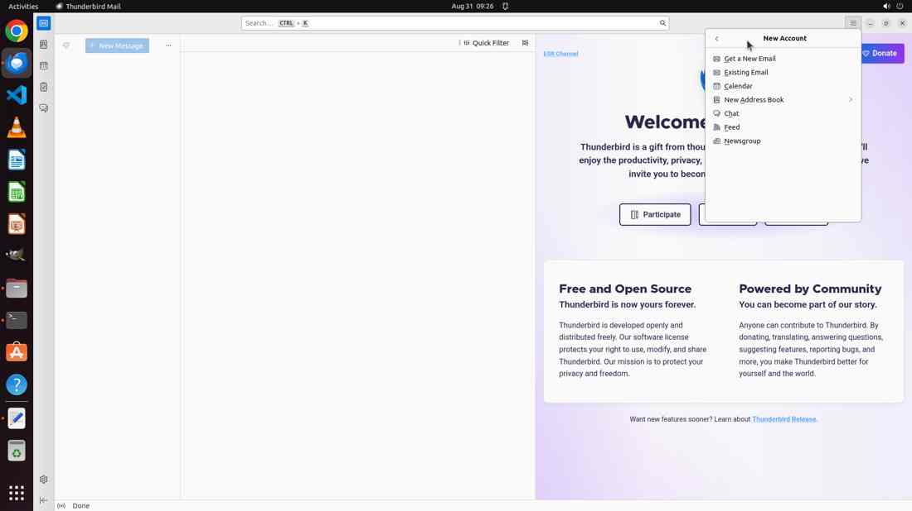
step 34 01:27:01
THINKINGThe New Account submenu shows: Get a New Email, Existing Email, Calendar, New Address Book, Chat, Feed, Newsgroup.
"Existing Email" is the manual account add. Let me choose "Existing Email" to set up an account manually. This will open the account setup where I can configure manually.
ACTIONI'll choose "Existing Email" to set up a mail account (which creates Local Folders).
EXECUTED (pyautogui in VM)pyautogui.click(1570, 152)
step 35 01:27:14
THINKINGThe account setup form is open. I'll fill in a name and email, then Continue. It will try to autoconfigure and fail, then offer "Configure manually". Let me fill in fields and continue.
Let me type a name and a fake email address, then click Continue.
ACTIONLet me fill in the account details and continue.
EXECUTED (pyautogui in VM)pyautogui.typewrite("hr@rivernead.example")
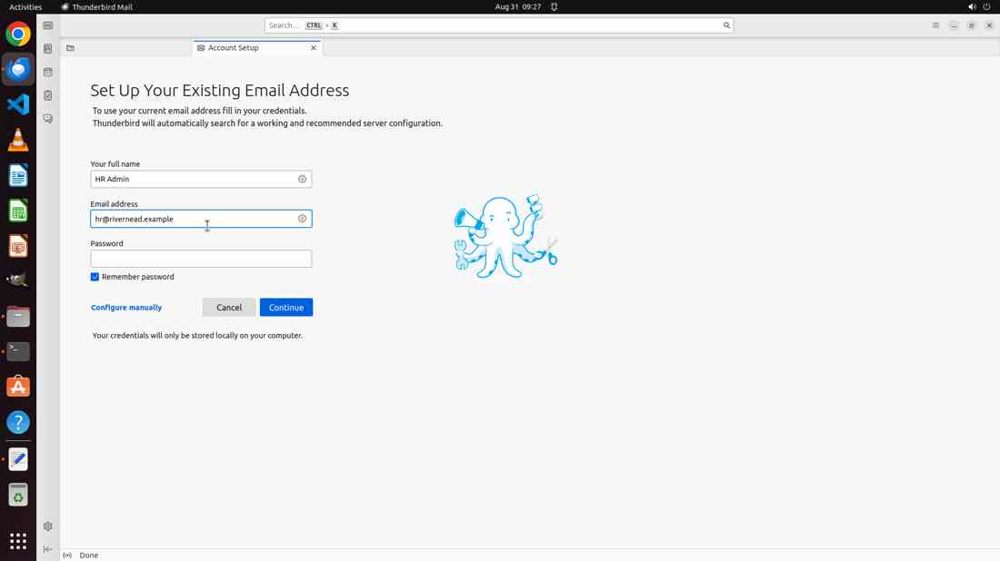
step 39 01:27:53
THINKINGNow "Configure manually" link appeared. Since the server doesn't exist, I'll use "Configure manually" to set POP3 with local settings, which won't require reaching a real server. Actually, POP3 is better than IMAP for a local setup since it doesn't need the server to list folders. Let me click "Configure manually" to fill server settings. I need a password too. Let me first enter a password, then click Configure manually.
Actually, let me click "Configure manually" - it will expand fields for incoming/outgoing server. I'll set them to something. The key is completing account creation so Local Folders appears. With POP3, Thunderbird creates the account locally and doesn't need the server to be reachable to create the folder structure (INBOX etc.). Let me click Configure manually.
ACTIONThe "Configure manually" option is now available. Let me enter a password and click "Configure manually" to set local POP3 settings.
EXECUTED (pyautogui in VM)pyautogui.click(240, 588)
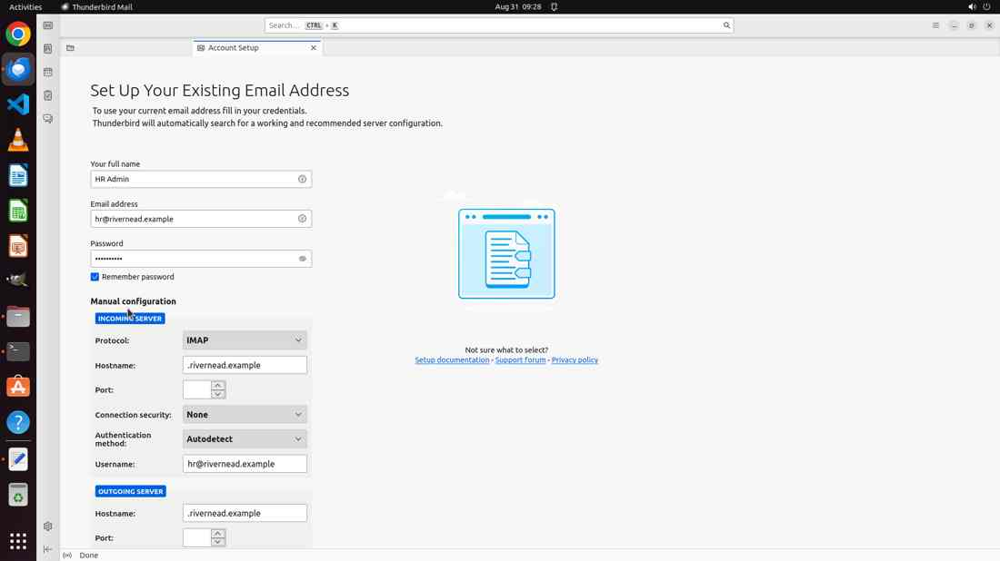
step 42 01:28:29
THINKINGManual configuration is expanded. Protocol is IMAP. For a local, non-server-reachable setup, POP3 is better because it creates the account's INBOX locally without needing to fetch the folder list from the server. IMAP might require connecting to the server to list folders and could fail/hang. Let me change Protocol to POP3.
Let me click the Protocol dropdown and select POP3.
ACTIONLet me change the protocol to POP3 (works better without a reachable server). I'll click the Protocol dropdown.
EXECUTED (pyautogui in VM)pyautogui.click(382, 716)
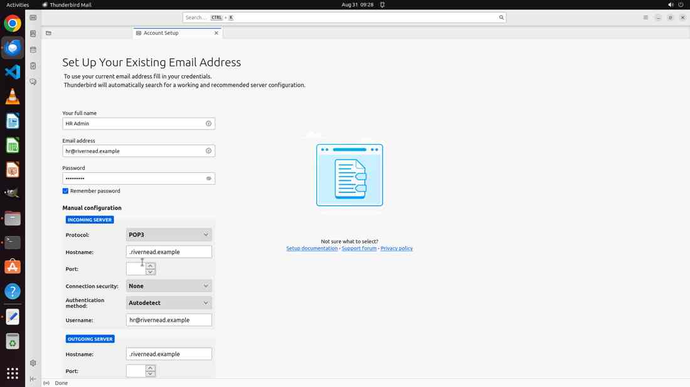
step 44 01:28:49
THINKINGNow POP3 is selected. I should fill in a port. Let me set the incoming port to 110 and outgoing to 25. Actually, the "Re-test" button (I need to scroll down to find it) may try to verify and fail. But with POP3, the account can be created even without successful connection? Let me scroll down to see the Re-test / Done buttons.
Actually, let me fill in the ports to make it more complete. Let me type port 110 in incoming port field. Let me click the incoming port field and type 110.
ACTIONNow let me fill in the ports. I'll set the incoming port to 110.
EXECUTED (pyautogui in VM)pyautogui.click(382, 748)
step 45 01:28:58
THINKINGLet me type 110 in the incoming port, then set the outgoing port. The outgoing port field is at ~255, 688. Let me type 110, then click outgoing port and type 25.
EXECUTED (pyautogui in VM)pyautogui.typewrite("110")
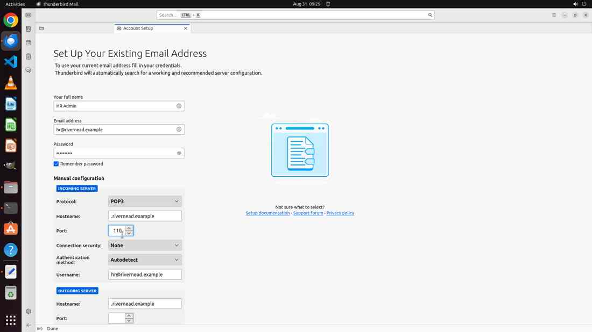
step 46 01:29:06
THINKINGNow let me set the outgoing port. Let me scroll down to reveal the outgoing port field and the Re-test/Done buttons. Let me click the outgoing port field and type 25. The outgoing port field is at ~255, 688 but it may be cut off. Let me scroll down within this panel first to see the full outgoing section and buttons.
ACTIONNow let me set the outgoing port. I'll click it and type 25.
EXECUTED (pyautogui in VM)pyautogui.moveTo(599, 600)
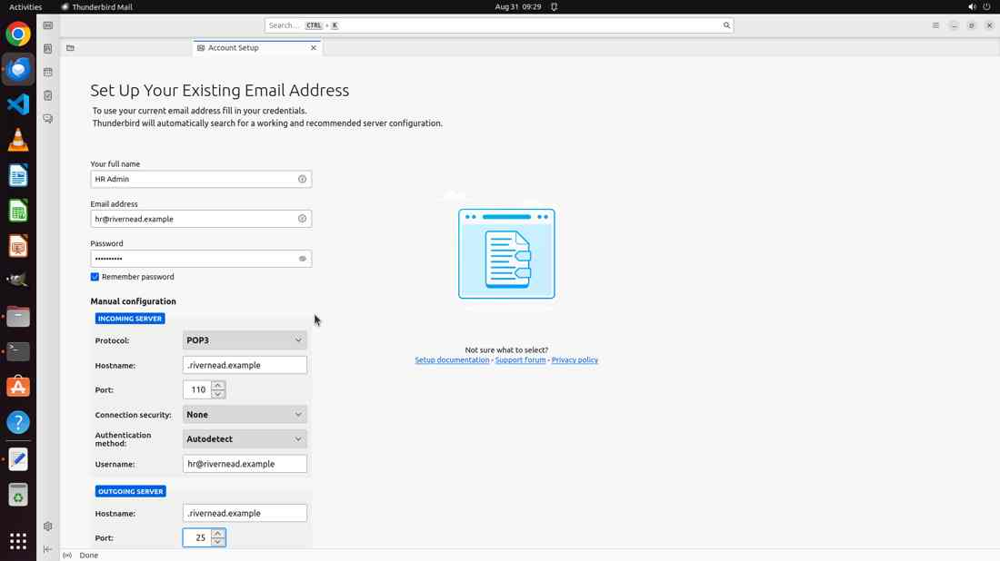
step 48.2 01:29:25
same model call as the previous action
EXECUTED (pyautogui in VM)pyautogui.scroll(-3)
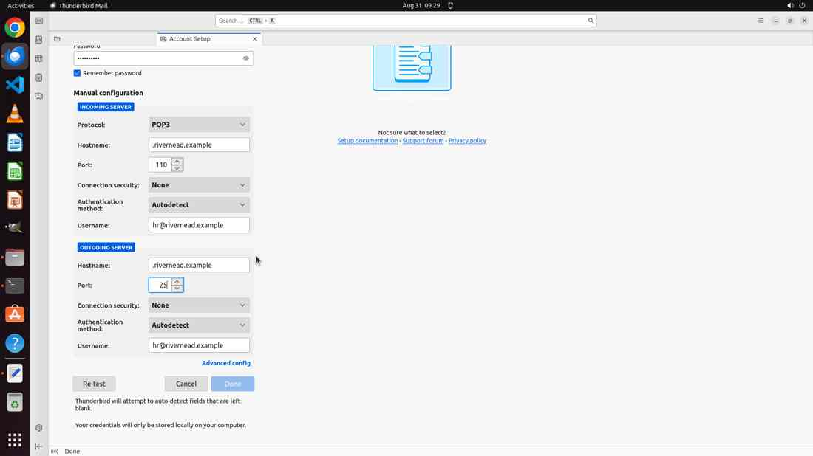
step 49 01:29:42
THINKINGThe "Done" button is greyed out. I need to click "Re-test" first to validate, which will enable "Done". But Re-test will try to connect to a non-existent server and likely fail. Let me click Re-test and see what happens. If it fails, "Done" might remain disabled.
Actually, for POP3, the Re-test may attempt a connection and fail since the server doesn't exist. This could block account creation.
Hmm. Let me reconsider. The "Done" button is disabled until a successful test. If the server is unreachable, this approach fails.
Let me reconsider the whole strategy. Instead of adding a mail account (which requires a working server for validation), maybe there's a better approach to get Local Folders.
Wait — actually, there IS a much simpler realization. In Thunderbird, "Local Folders" is a built-in account that exists independent of any mail account. The reason it's not showing is that this is a completely fresh profile. But I recall that when Thunderbird starts for the very first time, it DOES create "Local Folders" automatically.
But my terminal check showed no Mail directory in either profile. That means Local Folders was never created.
Actually, the issue: the profile b6x27ivi.default had no prefs.js and no Mail. The wtkk3c2w.default-release had no Mail. But which profile is actually loaded? The one Thunderbird is running with. The one being written now is where prefs.js gets created. Let me not go down this path.
Let me just try Re-test. If it fails and Done stays disabled, I'll reconsider. Let me click Re-test.
ACTIONThe "Done" button is disabled until a test passes. Let me click "Re-test" to attempt validation.
EXECUTED (pyautogui in VM)pyautogui.click(219, 904)
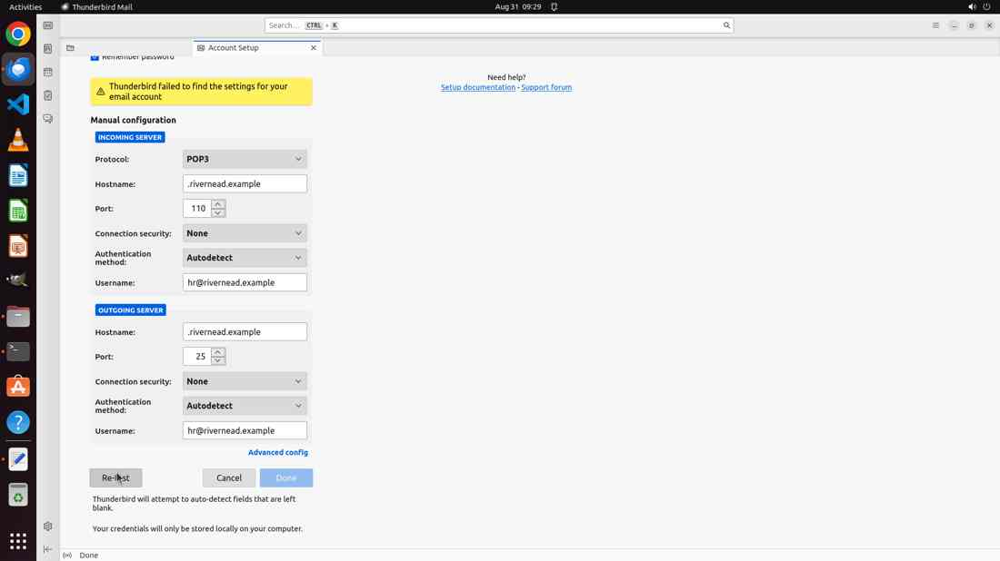
step 50 01:30:04
THINKING"Thunderbird failed to find the settings for your email account" and "Done" is still disabled. This confirms the mail account approach won't easily work since the server doesn't exist.
Let me abandon the mail account approach. I'll click Cancel and reconsider.
The core issue: I need "Local Folders" to exist. Since it's a fresh profile with no account, the standard GUI won't let me create a folder (there's no account to attach it to).
New idea: I can directly create the "Local Folders" structure and register it in prefs.js. But modifying prefs while Thunderbird is running is problematic — changes get overwritten on exit. I'd need to close Thunderbird first.
Actually, there's a cleaner realization. Let me reconsider: In Thunderbird, "Local Folders" (servertype 3 / local) is created on first launch. Maybe it wasn't created because I exited the setup early.
Let me think about the most robust approach:
1. Cancel this account setup.
2. Close Thunderbird completely.
3. Edit prefs.js (or create it) to register a Local Folders account and create the Mail/Local Folders directory.
But that's fragile. Let me reconsider if there's a simpler GUI path.
Actually — reconsider. When I first launched, I was in "Account Setup". Maybe if I had NOT chosen "Exit Setup" and instead just closed that, Local Folders would have been created.
Actually, the cleanest approach now: The profile directory. Let me check which profile is actually the active one and whether "Local Folders" can be triggered.
Wait, I have a better idea. Let me reconsider whether Local Folders actually is required to be present for the task. The task says create a folder "directly under Local Folders" and a filter "on Local Folders". So Local Folders must exist.
Let me try a different, reliable method: Cancel out, then close Thunderbird, then manually create the Local Folders account in prefs.js and the folder. This is a known approach. But it's complex and error-prone.
Alternatively — maybe I'm wrong that Done requires success. Let me re-read: "Thunderbird failed to find the settings for your email account." This is a soft warning (yellow banner), not a hard block. But Done is greyed.
Hmm. Let me reconsider. Actually, in some Thunderbird versions, even after a failed re-test, if the fields are filled it lets you finish. Here it's not.
Let me reconsider the profile situation more carefully. The two profiles: b6x27ivi.default and wtkk3c2w.default-release. profiles.ini determines which is default. Let me cancel, close Thunderbird, and inspect/create Local Folders in prefs.js.
Actually, wait. Let me reconsider a much simpler possibility that I dismissed too quickly: Perhaps "Local Folders" IS available but I need to look at the folder pane after properly initializing. Let me cancel this, and re-examine. If genuinely absent, I'll do the prefs.js approach.
Actually, the most reliable and clean approach given the constraints:
- Cancel account setup
- Quit Thunderbird
- Edit the active profile's prefs.js to add a Local Folders account (servertype local, root "Local Folders") and create Mail/Local Folders directory + a "New Hires" subfolder, and the filter.
But that's a lot of manual config and risky. Let me first cancel and re-examine the folder pane one more time, and check the profile to see the active profile and whether a "Local Folders" can be simply enabled.
Let me click Cancel.
ACTIONThe mail account can't be validated (no real server), so that path won't cleanly create Local Folders. Let me cancel and take a different, more reliable approach.